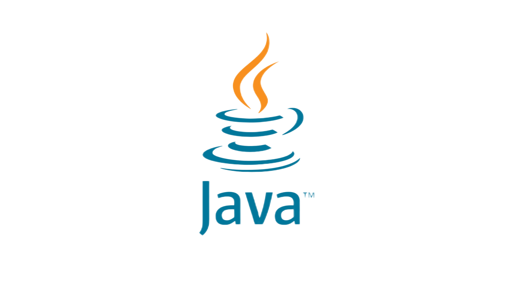

Забони барномасозии Java
Java забони кросс-платформаи дорои шумораи зиёди китобхонаҳо ва ҷомеаи бузурги таҳиягарон мебошад. Кросс-платформа ин қобилияти як бор навиштани барнома ва фавран истифода бурдани он дар якчанд системаҳои оператсионӣ мебошад: Windows, Linux ва MacOS. Бо шарофати китобхонаҳо, Java қариб барои ҳама чиз мувофиқ аст: кор бо графика, садо, эҷоди бозиҳои хурд. Ва дар ҷомеаи калон, як таҳиягари навкор метавонад ба осонӣ қисмҳои коди тайёрро барои вазифаҳои гуногун пайдо кунад ва ба қариб ҳама саволҳо ҷавоб диҳад.
Дар кучо истифода бурда мешавад
Java забон барои ҳама чиз аст. Он барномаҳои мобилии Android, барномаҳои печи ва серверҳоро менависад. Барои таҳияи барномаҳои мобилӣ ҳоло Забони Котлин бештар истифода мешавад. Аммо Дар Java аллакай бисер барномаҳо навишта шудаанд, ки бояд нигоҳдорӣ ва навсозӣ шаванд.
Чи қадар маблағ кор кардан мумкин
Маоши таҳиягарони Java аз маоши муқаррарии барномасозон аз 100 ҳазор то 250 ҳазор доллар дар Маскав фарқ намекунад.
Барои чи омухтвн зарур аст
Бо Java шумо метавонед сервери хонагӣ е барномаи телефони мобилӣ созед. Ин чандон осон нахоҳад буд, аммо шумо метавонед ду харгӯшро бо як тир кушед — барнома созед ва ҳамзамон забони маъмулро омӯзед.
Омузиши Java